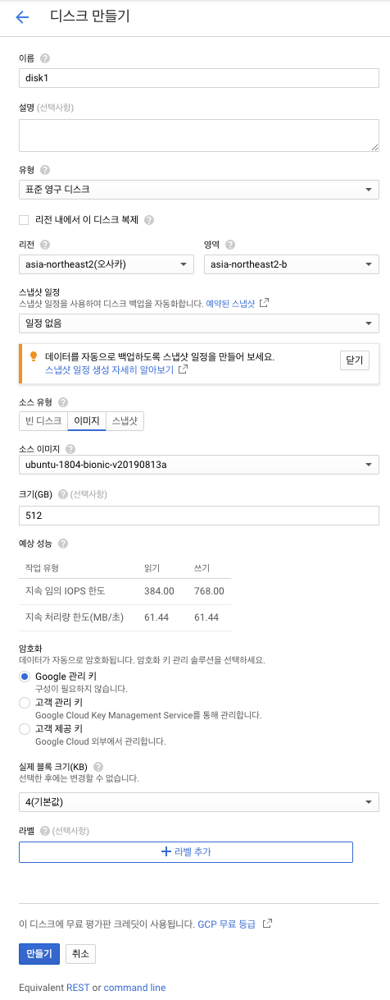
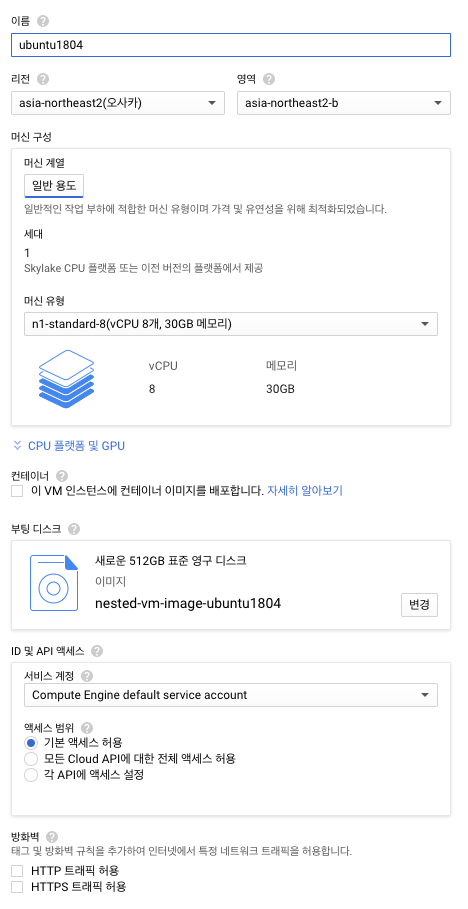
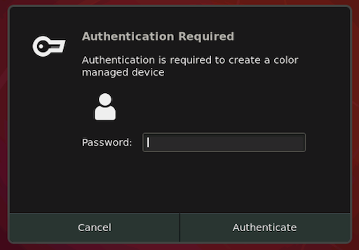
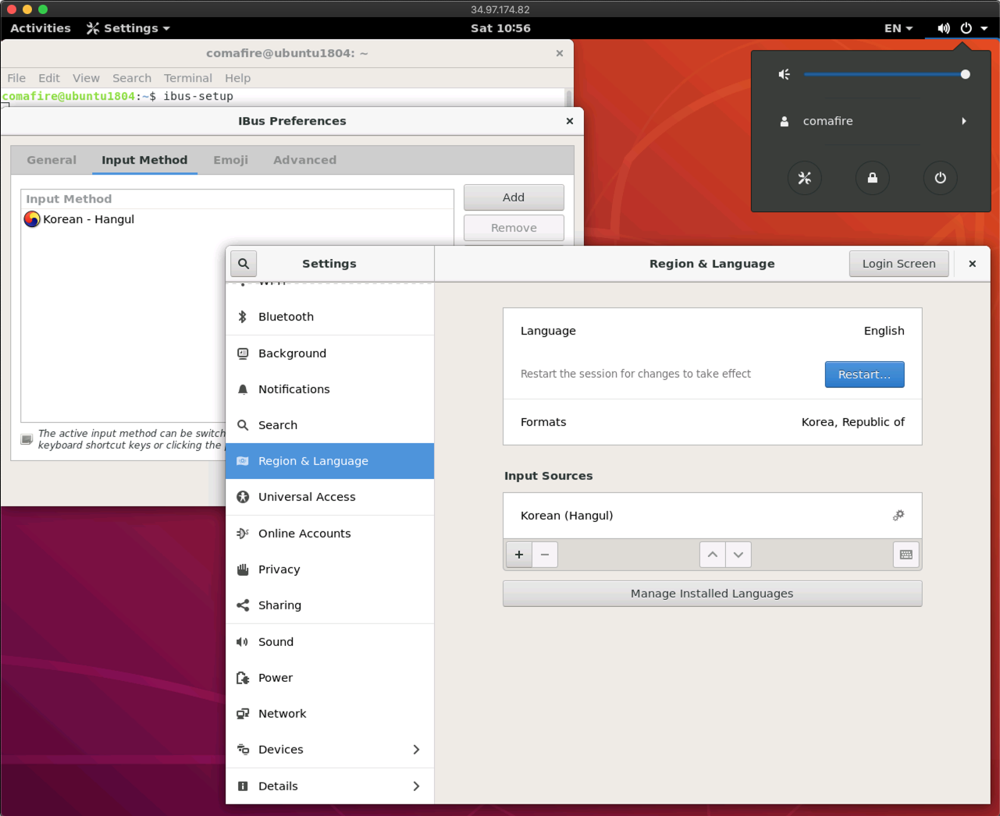

Google Computer Engine
Contents
Google Computer Engine#
고성능의 장비가 필요하지만, 한번에 많은 비용을 투자 할 수 없는 상황이고, 기성 서비스가 아닌 자신만의 개발 환경이 필요하다면 Cloud Virtual Machine 을 이용하는 것도 한가지 방법입니다.
Cloud VM 요금제 중 약정 또는 선점형 서비스를 통한 할인율은 상당히 높기 때문에 주의 깊게 사용한다면 장비 구입보다 좋은 선택이 될 수도 있습니다.
여기서는 이를 위해 GCP 상에서 필요한 기본적인 셋팅에 대해서 다룹니다.
중첩 가상화 인스턴스 만들기#
중첩 가상화는 Cloud VM 내에서 다시 VM 을 중복해서 생성하여 사용할 수 있는 방식입니다. 멀티 노드 클러스터에 대한 테스트를 위해서 Vagrant 에서 VM 을 생성하는 경우가 많기 때문에 중첩 가상화가 가능한 VM 을 사용합니다. 만약 이런 용도가 아니라면 일반 VM 을 사용하여도 무방합니다.
GCE 에서 VM 중첩 가상화는 아래와 같은 제한 사항을 가집니다.
중첩된 가상화는 Haswell 이상의 프로세서에서 실행되는 L1 VM에 대해서만 사용 설정할 수 있습니다.
중첩된 가상화는 Linux 인스턴스에서 실행되는 KVM 기반 하이퍼바이저에서만 지원됩니다. (Windows VM은 중첩된 가상화를 지원하지 않습니다.)
GCE 에서 테스트된 Linux VM 이미지는 Ubuntu 16.04 LTS 이지만, 테스트 결과 18.04 LTS 에서도 사용 가능하였기에 여기서는 18.04 를 이용합니다.
중첩 가상화는 하드웨어 제한 사항으로 인해 사용할 수 있는 리전이 제한됩니다. 한국에는 구글 리전이 없기 때문에 한국에서 제일 가까우면서 하드웨어가 지원되는 리전인 를 아래 링크에서 확인하여 해당하는 오사카리전을 사용하였습니다. 이외 다른 리전 정보는 https://cloud.google.com/compute/docs/regions-zones/ 이곳에서 확인하세요.
먼저, 중첩 가상화 VM 이미지를 만들 디스크를 오사카 리전에 Ubuntu 18.04 이미지로 만듭니다.

생성한 부팅 디스크를 이용해 중첩 가상화용 커스텀 이미지를 생성합니다. 이를 위해서 먼저 gcloud 툴을 설치합니다.
https://cloud.google.com/sdk/docs/quickstarts?hl=ko 이 곳에서 GCP를 컨트롤 하는 노드의 운영체제 종류에 따라 gcloud를 설치하고, gcloud init 명령을 통해 구글 계정 및 해당 프로젝트와 연동합니다.
이제 gcloud 명령을 통해 위에서 생성한 disk1 이미지를 이용하여 중첩 가상화가 가능한 VM 이미지를 생성합니다. 생성시 리전을 디스크와 같은 오사카 리전으로 설정해 주면 됩니다.
gcloud compute images create nested-vm-image-ubuntu1804 --source-disk disk1 --source-disk-zone asia-northeast2-b --licenses "https://www.googleapis.com/compute/v1/projects/vm-options/global/licenses/enable-vmx"
이 후 생성된 이미지를 통해 아래와 같이 중첩 가상화가 가능한 VM 인스턴스를 생성할 수 있습니다. 설정 중 “선점 가능성” 을 사용하게 되면 VM 인스턴스가 우선순위가 높은 사용자에의해 선점되면서 종료 될 수 있지만, 매우 저렴하게 인스턴스를 이용할 수 있는 장점이 있습니다.


이제 생성된 VM 인스턴스에 SSH 를 통하여 접속한 후에 중첩 가상화가 동작하는지 아래 명령을 확인할 수 있습니다.
grep -cw vmx /proc/cpuinfo
0 이 아닌 값이 나오면 제대로 설정된 것이며, 이제 VM 안에서 다시 VM 을 띄울수 있게 되었습니다.
Gnome on Ubuntu 18.04#
구글의 기본 VM 이미지는 Gnome 데스크탑이 설치되어 있지 않습니다. 서버용도가 아니기 떄문에 여러모로 GUI 를 사용할 수 있는 환경이 편리하기 때문에 여기서는 생성한 VM 에 Ubuntu 18.04 의 기본 GUI 인 Gnome 을 설치하고 Remote Desktop Protocol 를 통해 원격에서 사용할 수 있도록 설치해 보도록 하겠습니다.
RDP를 사용하기 위해서 구글의 VM 관리자 계정인 ubuntu 와 사용자 계정에 암호를 설정합니다.
sudo passwd ubuntu
sudo passwd comafire
이제 아래 명령을 차례대로 수행하여 ubuntu-desktop 및 RDP 를 설치하고 시작합니다.
sudo apt install tasksel
sudo tasksel install ubuntu-desktop
sudo service gdm3 start
sudo apt inatll xrdp
sudo systemctl enable xrdp
설치가 완료되면 RDP 앱을 이용하여 해당 인스턴스에 접속이 가능하게 됩니다. Remote Desktop Client의 경우 윈도우는 기본앱 중에 하나이고 macOS 에서는 앱스토어를 통해 설치가 가능합니다.
RDP 앱을 통해 접속시에 아래와 같은 인증 창을 뜨지 않게 하기위해 아래와 같이 해당 내용으로 파일을 생성하고 로그 아웃후에 다시 접속합니다.

sudo vi /etc/polkit-1/localauthority/50-local.d/45-allow-colord.pkla
[Allow Colord all Users]
Identity=unix-user:*
Action=org.freedesktop.color-manager.create-device;org.freedesktop.color-manager.create-profile;org.freedesktop.color-manager.delete-device;org.freedesktop.color-manager.delete-profile;org.freedesktop.color-manager.modify-device;org.freedesktop.color-manager.modify-profile
ResultAny=no
ResultInactive=no
ResultActive=yes
이제 RDP 앱을 통해 원격으로 리눅스 GUI 환경에 접속이 가능하게 되었습니다.
구글 기본 앱은 영어 기반이므로 마지막으로 한글 설정을 해보도록 하겠습니다.
먼저 Language Support 앱을 실행한 후에 Install/Remove Languages 버튼을 눌러 Korean Language 팩을 설치합니다.

패키지 적용을 위해 잠시 로그아웃한 후에 다시 RDP 앱을 통해 원격으로 접속합니다.
이제 한글 입력기 설정을 통해 앱들에 한글을 입력할 수 있도록 설정합니다. 터미널에서 ibus 설정앱을 실행합니다.
ibus-setup
아래 그림처럼 iBus Preperences 에서 Add 버튼을 누르고 Korean - Hangul 을 추가해 줍니다. 이 후 Settings 앱에서 Region & Language 메뉴를 통해 Formats 과 Input Sources 에 Korean(Hangul)을 추가해 주면 됩니다.

이제 Shift + Space 키 조합으로 앱에서 한글을 사용할 수 있게 되었습니다. 이제 GCP를 통해 GUI 환경에서 편하게 연구와 개발을 할 수 있는 기본적 환경을 구성이 완료되었습니다.